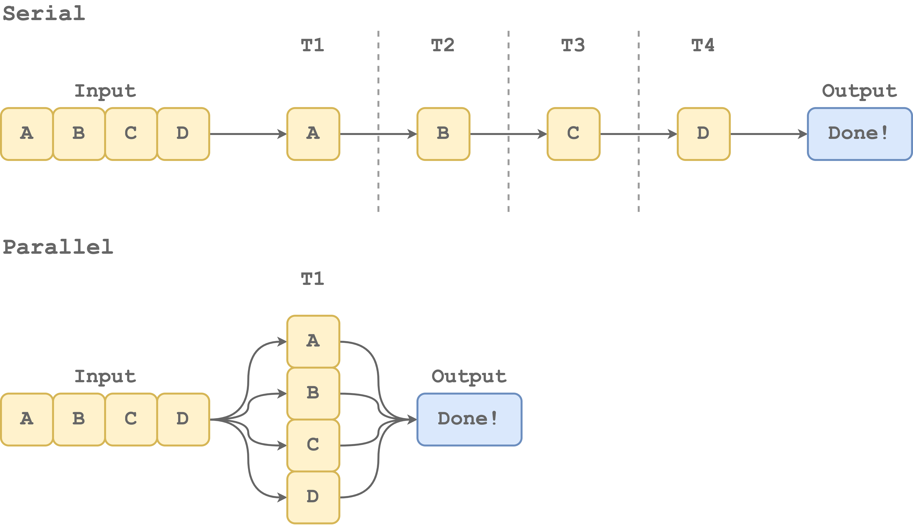
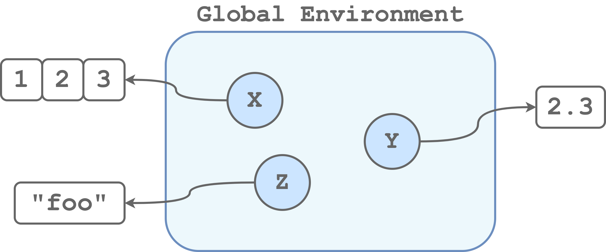
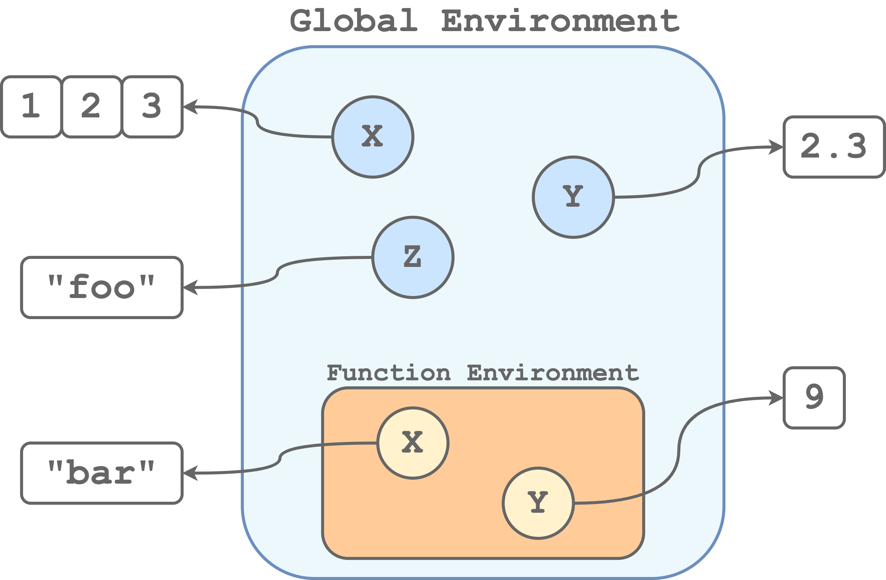
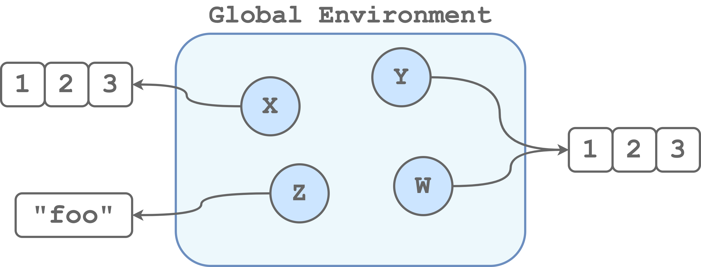
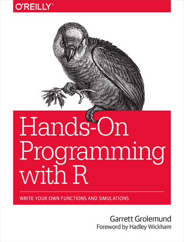
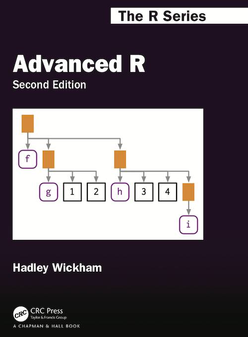
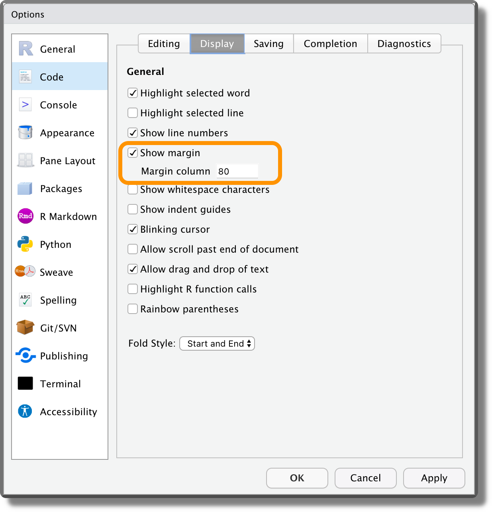
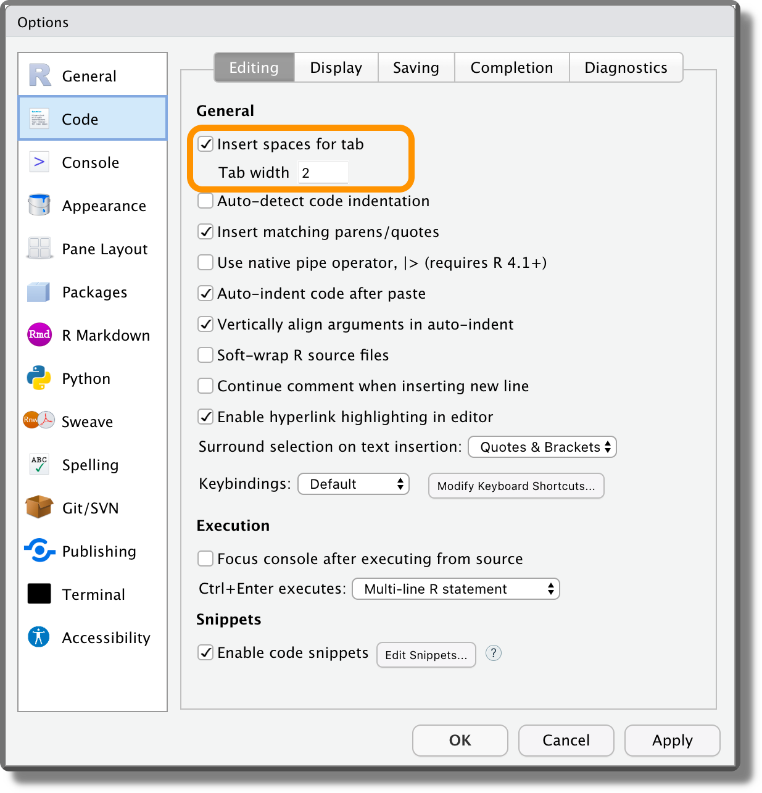
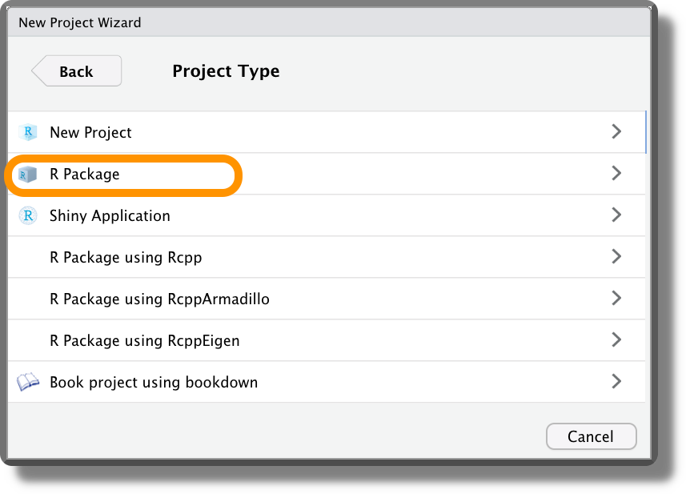
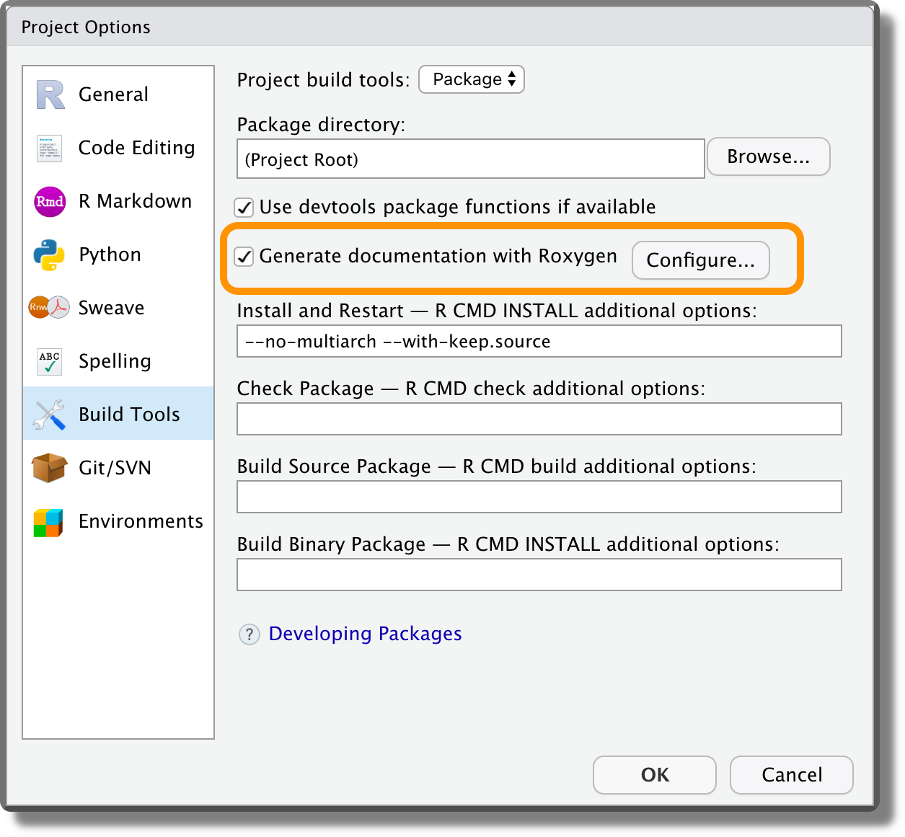

Chapter 5 Coding
In the previous chapters, we learned to share our materials using the Open Science Framework (OSF) and to organize all our files in a well structured and documented repository. Moreover we learned recommended practices to organize and share our data.
However, if we want our analysis to be reproducible, we need to write code, actually, we need to write good code. In this chapter, we provide some main guidelines about coding. In particular, in Section 5.1, we describe general coding good practices and introduce the functional style approach. Note that, although examples are in R, these general recommendations are valid for all programming languages. In Section 5.2, we further discuss specific elements related to R and we introduce more advanced R packages that can be useful when developing code in R.
5.1 Coding Style
Often, researchers’ first experience with programming occurs during some statistical courses where they are used as a tool to run statistical analyses. In these scenarios, all our attention is usually directed to the statistical burden and limited details are provided about coding per sé. Therefore, we rarely receive any training about programming or coding good practices and we end up learning and writing code in a quite anarchic way.
Usually, the most common approach is to create a very long single script where, by trials-and-errors and copy-and-paste, we collect all our lines of code in a chaotic way hoping to obtain some reasonable result. This is normal during the first stages of an analysis, when we are just exploring our data, trying different statistical approaches, and coming up with new ideas. As the analyses get more complex, however, we will easily lose control of what we are doing introducing several errors. At this point, reviewing and debugging the code will be much more difficult. Moreover, it would be really hard, if not impossible, to replicate the results. We need to follow a more structured approach to avoid these issues.
In Chapter 9, we discuss how to organize the scripts and manage the analysis workflow to enhance results reproducibility and code maintainability. In this Chapter, instead, we focus on how to write good code.
But, what does it mean to write “good code”? We can think of at least three important characteristics that define a good code:
- It Works. Of course, this is a quite obvious prerequisite, no one wants a code that does not run.
- Readable. We want to write code that can be easily read and understood by other colleagues. Remember that that colleague will likely be the future us.
- Easy to Maintain. We want to organize the code so that we can easily fix bugs and introduce changes when developing our project.
In Section 5.1.1, we describe the general good practices to write readable code. In Section 5.1.2, we introduce the functional style approach to allow us to develop and maintain the code required for the analysis more efficiently. Finally, in Section 5.1.3, we briefly discuss some more advanced topics that are important in programming.
5.1.1 General Good Practices
“Any fool can write code that a computer can understand. Good programmers write code that humans can understand.” – Martin Fowler, “Refactoring: Improving the Design of Existing Code”
“Good coding style is like using correct punctuation. You can manage without it, but it sure makes things easier to read.” – Hadley Wickham
If you do not agree with the above quotations, try to read the two following chunks of code.
y<-c(1,0,1,1,0,1,1);p<-sum(y)/length(y);if(p>=.6){"Passed"}else{"Failed"}
## [1] "Passed"# Load subj test answers
exam_answers <- c(1,0,1,1,0,1,1) # 0 = wrong; 1 = correct
# Get exam score as proportion of correct answers
exam_score <- sum(exam_answers) / length(exam_answers)
# Set exam pass threshold [0,1]
threshold <- .6
# Check if subj passed the exam
if (exam_score >= threshold) {
"Passed"
} else {
"Failed"
}
## [1] "Passed"Which one have you found easier to read and understand? Unless you are a Terminator sent from the future to assassinate John Connor, we are sure you had barely a clue of what was going on in the first chuck. On the contrary, you could easily read and understand the second chunk, as if you were reading a plain English text. This is a simple example showing how machines do not need pretty well-formatted and documented code, but the programmers do.
Some programming languages have specific syntax rules that we need to strictly abide by to avoid errors (e.g., the indentation in Python is required to mark code blocks). Other programming languages are more flexible and do not follow strict rules (e.g., the indentation in R is for readability only). However, there are some general good practices common to all programming languages that facilitate code readability and understanding. In the next sections, we discuss some of the main guidelines.
5.1.1.1 Variable Names
“There are only two hard things in Computer Science: cache invalidation and naming things.” – Phil Karlton
Choosing appropriate object and variable names is important to facilitate code readability. Names should be:
Auto-descriptive. The content of an object or of a variable should be obvious from their own names. Use meaningful names that clearly describe the object or variable content avoiding generic names. For example,
y # generic name without useful informationexam_answers # clear descriptive nameRight Length. Object and variable names should be neither too long nor too short. Use the minimum number of words required to describe the object avoiding incomprehensible abbreviations. Usually 2 or 3 words are enough. For example,
average_outcome_score_of_the_control_gorup # too long avg_scr_ctr # difficult to guess the abbreviation meaningavg_score_control # clear descriptive nameMoreover, we should not be scared of using longer names if these are required to properly describe an object or a variable. Most IDEs (i.e., integrated development environments such as RStudio or Visual Studio Code) have auto-complete features to help us easily type longer names. At the same time, this is not a good excuse to create 12-word-long names. Remember, names should not be longer than what is strictly necessary.
Objects’ and variables’ names can not include spaces. Therefore, to combine multiple words, we need to adopt one of the following naming styles:
camelCase - The first letter of the object or variable name is lowercase and the beginning of each new word is indicated by capitalizing its first letter. For example,
myObjectName # camelCasePascalCase - Similar to camelCase, but also the first letter of the object or variable name is capitalized. For example,
MyObjectName # PascalCasesnake_case - All words are lower-case and they are combined using the character
"_". For example,my_object_name # snake_casesnake.case (deprecated) - An alternative to the traditional snake_case, is to use the character
"."instead of"_". However, this is deprecated as in many programming languages the character"."is a reserved special character (see Section 5.1.3.3). For example,my.object.name # snake.case
Usually, every programming language has its specific preferred style, but it does not really matter which style we choose. The important thing is to choose one style and stick with it naming consistently all objects and variables.
Finally, we should avoid any name that could lead to possible errors or conflicts. For example, we should
- Avoid special characters (accented characters or other symbols), use only basic Latin characters.
- Avoid naming objects or variables using common function names (e.g.,
data,list, orsum). - Avoid using similar names for multiple objects that could easily be confused (e.g.,
lm_fit,lm_Fit).
Some extra tips concern the names of temporary variables that are commonly used in for loops or other data manipulation processes.
Position Index
i. To refer to some position indexes, the variableiis commonly used. Alternatively, we could use other custom names to indicate explicitly the specific selection operation. For example, we could userow_iorcol_ito indicate that we refer to row index or column index respectively.# Cities names cities <- c("Amsterdam", "Berlin", "Cardiff", "Dublin") # Loop by position index for (i in seq_len(length(cities))) { cat(cities[i], " ") } ## Amsterdam Berlin Cardiff DublinElement
k. To refer to an element inside an object we can use the variablek. Alternatively, a common approach is to use the plural and the singular names to refer to the collection of all elements and the single element respectively (or an indicative name that represents a part of a unit, for example,sliceforpizza).# Loop by element for (city in cities) { cat(city, " ") } ## Amsterdam Berlin Cardiff Dublin
These are not mandatory rules but just general recommendations. Using consistently distinct variables to refer to position indexes or single elements of a collection (e.g., i and k, respectively) facilitates the review of the code and allows us to identify possible errors more easily.
5.1.1.2 Spacing and Indentation
Again, some programming languages have specific syntax rules about spacing and indentation (e.g., Python), whereas other programming languages are more flexible (e.g., R). However, it is always recommended to use appropriate and consistent spacing and indentation to facilitate readability. As general guidelines:
Line Length. Limit the maximum length of each line of code to 80 characters. Most IDEs display a vertical line in the editor to indicate the recommended margin.
Spacing. Use spaces around operators and after commas separating function arguments. Spaces are free, so we should always use them to enhance readability.
x<-sum(c(1:10,99),rnorm(5,mean=3,1)) if(test>=5&test<=10)print("...")x <- sum(c(1:10, 99), rnorm(n = 5, mean = 3, sd = 1)) if (test >= 5 & test <= 10) print("...")Alignment. Break long function or object definitions into multiple lines and align arguments to facilitate readability.
my_very_long_list<-list(first_argument="something-very-long", second_argument=c("many","objects"),third_argument=c(1,2,3,4,5))my_very_long_list <- list( first_argument = "something-very-long", second_argument = c("many", "objects"), third_argument = c(1, 2, 3, 4, 5) )Indentation. Always indent code blocks to facilitate understanding of the code structure. This is particularly important for nested conditional code blocks and loops. However, too complex nested code hinders readability. In this case, we may prefer to rewrite our code reducing the nesting structure and improving readability.
for (...) { # Outer loop ... for (...) { # Inner loop ... if (...) { # Conditional ... }}}for (...) { # Outer loop ... for (...) { # Inner loop ... if (...) { # Conditional ... } } }To indent the code, we can use spaces or Tabs. For a nice debate about this choice see https://thenewstack.io/spaces-vs-tabs-a-20-year-debate-and-now-this-what-the-hell-is-wrong-with-go (do not forget to watch the linked video as well). However, if we mix together Tabs and spaces this will lead to errors in programming languages that require precise indentation. This issue is very difficult to debug as Tabs and spaces look invisible. To avoid this problem, most editors allow the user to automatically substitute Tabs with a fixed number of spaces.
5.1.1.4 Other Tips
Here we list other general recommendations to facilitate code readability and maintainability.
Use Named Arguments. Most programming languages allow defining function parameters according to their specific order in the function call or by specifying the parameter name. When possible, we should always define parameter values by specifying the parameter names. In this way, we enhance readability and limit the possibility of making errors.
x <- seq(0, 10, 2)x <- seq(from = 0, to = 10, by = 2)Avoid Deep Nesting. Complex nested code structures hinder readability and are more complex to follow. In these cases, we may prefer to rewrite our code reducing the nesting structure to improve readability and maintainability.
check_value <- function(x){ if (x > 0) { if (x > 100) { return("x is a positive large value") } else { return("x is a positive value") } } else { if (x < - 100) { return("x is a negative small value") } else { return("x is a negative value") } } }check_value <- function(x){ if(x < - 100) return("x is a negative small value") if(x < 0) return("x is a negative value") if(x < 100) return("x is a positive value") return("x is a positive large value") }KISS (Keep It Simple Stupid). As we get more proficient with a programming language, we usually start to use more advanced functions and rely on (not so obvious) language-specific behaviours or other special tricks. This allows us to write a few lines of compact code instead of lengthy chunks of code, but, as a result, readability is severely compromised. There is a trade-off between readability and code length.
We should always aim to write elegant and readable code. This is different from trying to write code as short as possible. This is not a competition where we need to show off our coding skills. If we are not required to deal with specific constraints (e.g., time or memory efficiency), it is better to write a few more lines of simple code rather than squeezing everything into a single obscure line of code.
In particular, we should not rely on weird language-specific behaviours or unclear tricks, but rather we should try to make everything as explicit as possible. Simple and clear code is always easier to read and maintain.
Remember that writing good code requires time and experience. We can only get better by\(\ldots\) writing code.
5.1.2 Functional Style
When writing code, it is very likely that in many occurrences we need to apply the same set of commands multiple times. For example, suppose we need to standardize our variables. We would write the required commands to standardize the first variables. Next, each time we need to standardize a new variable, we will need to rewrite the same code all over again or we copy and pasted the previous code making the required changes. We would end up with something similar to the following lines of code.
# Standardize variables
x1_std <- (x1 - mean(x1)) / sd(x1)
x2_std <- (x2 - mean(x2)) / sd(x2)
x3_std <- (x3 - mean(x3)) / sd(x3)Rewriting the same code over and over again or, even worse, copying and pasting the same chunk of code are very inefficient and error-prone practices. In particular, suppose we need to modify the code to solve a problem or to fix a typo. Any change would require us to revise the entire script and to modify each instance of the code. Again, this is a very inefficient and error-prone practice.
To overcome this issue, we can follow a completely different approach by creating our custom functions. Considering the previous example, we can define, possibly in a separate script, the function std_var() that allows us to standardize a variable. Next, after we have loaded our newly created function, we can call it every time we need it. Following this approach, we would obtain something similar to the code below.
#---- my-functions.R ----#
# Define custom function
std_var <- function(x){
res <- (x - mean(x)) / sd(x)
return(res)
}
#---- my-analysis-script.R ----#
# Apply custom function
x1_std <- std_var(x1)
x2_std <- std_var(x2)
x3_std <- std_var(x3)Now, if we need to make some change to our custom function, we can simply modify its definition and any change will be automatically applied to each instance of the function in our code. This allows us to easily develop the code efficiently and limit the possibility of introducing errors (really common when copying and pasting).
Following this approach, we obey the DRY (Don’t Repeat Yourself) principle that aims at reducing repetitions in the code. Each time we find ourselves repeating the same code logic, we should not rewrite (or copy and paste) the same lines of code, but instead, we should create a new function and use it. By defining custom functions in a single place and then using them, we enhance code:
- Maintainability. If we need to fix an issue or modify some part of the code, we do not need to run all over our scripts making sure we change all occurrences of the function. Instead, we only need to modify the function definition in a single place. This facilitates enormously code debugging and development.
- Readability. Applying the DRY principle, entire chunks of code are substituted by a single function call. In this way, we obtain a much more compact code that, together with the use of meaningful function names, improves readability.
- Reuse. The DRY principle encourages the writing of reusable code facilitating the development.
Now it should be clear that writing functions each time we find ourselves repeating some code logic has many advantages. However, we do not have to necessarily wait for code repetitions before writing a function. Even if a specific code logic is present only once, we can always define a wrap function to execute it, improving code readability.
For example, in most analyses, we need to execute some data cleaning or preprocessing. This step usually requires several lines of code and operations that make our analysis script messy and difficult to read.
# Data cleaning
my_data <- read_csv("path-to/my-data.csv") %>%
select(...) %>%
mutate(...) %>%
gorup_by(...) %>%
summarize(...)To avoid this problem, we could define a wrap function in a separate script with all the operations required to clean the data and give it a meaningful name (e.g,. clean_my_data). Next, after we have loaded our custom function, we can use it in the analysis script to clean the data, improving readability.
#---- my-functions.R ----#
# Define data cleaning function
clean_my_data <- function(file){
read_csv(file) %>%
select(...) %>%
mutate(...) %>%
gorup_by(...) %>%
summarize(...)
}
#---- my-analysis-script.R ----#
# Data cleaning
my_data <- clean_my_data("path-to/my-data.csv")We followed a Functional Style: break down large problems into smaller pieces and define functions or combinations of functions to solve each piece.
Functional style and DRY principle allow us to develop readable and maintainable code very efficiently. The idea is simple. Instead of having a unique long script with all the analysis code, we define our custom functions to run each step of the analysis in separate scripts. Next, we use these functions in another script to run the analysis. In this way, we keep all the code organized and easy to read and maintain. In the short term, this approach requires more time and may seem overwhelming. In the long term, however, we will be rewarded with all the advantages.
In Chapter 9, we describe possible methods to manage the analysis workflow. In the following sections, we provide general recommendations about writing functions, documentation, and testing.
5.1.2.1 Functions Good Practices
Here we list some of the main recommendations and aspects to take into account when writing functions:
Knowing your Beast. Writing functions is more difficult than simply applying them. When writing functions we need to deal with environments and arguments evaluations (see Section 5.1.3.2), classes and methods (see Section 5.1.3.3), or other advanced aspects. This requires an in-depth knowledge of the specific programming language that we are using. Studying books about a specific programming language or consulting resources available online can help to improve our understanding of all the mechanisms underlying a specific programming language. At first, errors and bugs can be very frustrating, but this is also a great opportunity to improve our programming skills. Surely, Google and Stack Overflow will quickly become much-needed friends.
x <- sqrt(2) x^2 == 2 # WTF (Why is This False?) ## [1] FALSEall.equal(x^2, 2) ## [1] TRUE# Not intuitive behaviour round(1.5) ## [1] 2 round(2.5) ## [1] 2Function Names. The same recommendations provided for variable names apply also to function names. Thus, we need to choose meaningful names of appropriate length adopting a consistent naming style (the
snake_case()is usually preferred). In addition, function names should be verbs summarizing the function goal.f() my_data()get_my_data()Single Responsibility Principle. Each function should achieve a single goal. Avoid creating complex functions used for multiple different purposes. These functions are more difficult to maintain.
Handling Conditions. When using a function, we may need to handle different conditions. We could do that directly within the function. However, if the code becomes too complicated and it is difficult to understand which part of the code is evaluated, we may prefer to simply write separate functions. There are no absolute correct or wrong approaches, the only important thing is to favour readability and maintainability.
solve_condition <- function(x){ # Initial code ... if (is_condition_A){ ... } else { ... } # Middle code ... if (is_condition_B){ ... } else { ... } # Final code ... return(res) }solve_condition_A <- function(x){ # All code related to condition A ... return(res) } solve_condition_B <- function(x){ # All code related to condition B ... return(res) }From Small to Big. Start defining small functions that execute simple tasks and then gradually combine them to obtain more complex functions. In this way, we can enhance the re-usability of smaller functions. However, remember that each function, even the most complex ones, should always achieve a single goal.
Avoid Hard-Coded Values. To enhance function re-usability, we should avoid hard-coded values favouring instead the definition of variables and function arguments that can be easily modified according to the specific needs.
format_perc <- function(x){ perc_values <- round(x * 100, digits = 2) res <- paste0(perc_values, "%") return(res) }format_perc <- function(x, digits = 2){ perc_values <- round(x * 100, digits = digits) res <- paste0(perc_values, "%") return(res) }Checking Inputs. Check if the function’s arguments are correctly specified and handle exceptions by providing appropriate outputs or informative error messages. Checks are less relevant in the case of projects where the code is only used internally to run the analyses (although it is still valuable as it helps us debug and prevents possible unnoticed errors). On the contrary, it is extremely important in the case of services or packages where users are required to provide inputs. Be ready for any kind of madness from humans.
safe_division <- function(x, y){ res <- x / y return(res) } safe_division(x = 1, y = 0) ## [1] Infsafe_division <- function(x, y){ if(y == 0) stop("you can not divide by zero") res <- x / y return(res) } safe_division(x = 1, y = 0) ## Error in safe_division(x = 1, y = 0): you can not divide by zeroOf course, writing checks is time-consuming and therefore we need to decide when it is worth spending some extra effort to ensure that the code is stable.
Be Explicit. How functions return the resulting value depends on the specific programming language. However, a good tip is to always make the return statement explicit to avoid possible misunderstandings.
get_mean <- function(x){ sum(x) / length(x) }get_mean <- function(x){ res <- sum(x) / length(x) return(res) }KISS. Again we want to highlight that writing functions is not a competition where to show off our coding skills. We should always aim to write elegant and readable code. This does not mean squeezing everything into a single line of code. Remember, Keep It Simple (Stupid).
Files and Folders Organization. We could collect all the functions within the same script. However, maintaining the code would be very difficult. A possible approach is to collect related or similar functions within the same script and name the script accordingly (e.g.,
data-preprocessing.R,models.R,plots.R,utils.R). Alternatively, each function can be saved in a separate script named by the function name (this is usually done for complex long functions). Finally, we can collect all our scripts in a single folder within our project.WET (write everything twice). This is the opposite of the DRY principle. We just want to highlight that it is not the end of the world if we do not strictly follow the DRY principle (or any other rule). We should always take the most reasonable approach in any specific situation without blindly following some guidelines.
[TODO: find better examples?]
Remember that writing good functions requires time and experience. We can only get better by\(\ldots\) writing functions.
5.1.2.2 Documentation
Writing the code is only a small part of the work in creating a new function. Every time we define a new function, we should also provide appropriate documentation and create unit tests (see Section 5.1.2.3).
Function documentation is used to describe what the function is supposed to do, provides details about the function arguments and outputs, presents function special features, and provides some examples. We can document a function by writing multiple lines of comments right before the function definition or at the beginning of the function body.
Ideally, the documentation of each function should include:
- Title. One line summarizing the function goal.
- Description. A detailed description of what the function does and how it should be used. In addition, we can create multiple sections to discuss the function’s special features or describe how the function handles particular cases. Note that we can also provide links to external relevant documentation.
- Arguments. A list with all the function arguments. For each argument, provide details about the expected data type (e.g., string, numeric vector, list, specific object class) and describe what the parameter is used for. We should also discuss the parameter default values, possible different options and effects.
- Outputs. Describe the function output specifying the data type (e.g., string, numeric vector, list, specific object class) and what the output represents (important in the case of a function returning multiple elements).
- Examples. Most of the time an example is worth a thousand words. Providing simple examples, we clarify what the function does and how it should be used. Moreover, We can also present specific examples showing function special features or particular use cases.
Thus, for example, we could create the following documentation.
#---- format_perc ----
# Format Values as Percentages
#
# Given a numeric vector, return a string vector with the values formatted
# as percentage (e.g., "12.5%"). The argument `digits` allows specifying
# the rounding number of decimal places.
#
# Arguments:
# - x : Numeric vector of values to format.
# - digits: Integer indicating the rounding number of decimal places
# (default 2)
#
# Output:
# A string vector with values formatted as percentages (e.g., "12.5%").
#
# Examples:
# format_perc(c(.749, .251))
# format_perc(c(.749, .251), digits = 0)
format_perc <- function(x, digits = 2){
perc_values <- round(x * 100, digits = digits)
res <- paste0(perc_values, "%")
return(res)
}Let’s discuss some general aspects of writing documentation:
Generating documentation. Most programming languages have specific rules to create documentation that can be automatically parsed and made available in the function help pages or autocompletion hints. Alternatively, dedicated packages are usually provided to facilitate documentation generation. Therefore, it is worth checking the documentation best practices of our preferred programming language and sticking to them.
Time consuming. Creating function documentation is time-consuming, and for this reason unfortunately it is often neglected. However, without documentation, we severely compromise the maintainability of our code.
Documenting applications and packages. In the case of applications or packages, where our functions are expected to be used by others, documentation is the most important aspect. No one will use our application or package if there are no instructions. In this case, we really need to put some extra effort into creating excellent functions’ documentation, vignettes, and online resources to introduce our application or package and provide all the details.
Moreover, in the case of open-source projects, documentation should not be limited to the exported functions (i.e., functions directly accessed by the users), but it should include internal functions as well (i.e., utility functions used inside the app or package not directly accessed by the users). In fact, documenting all functions is required to facilitate the project maintenance and development by multiple contributors.
Documenting analyses. In the case of projects where the code is only used to run the analyses, documentation may seem less relevant. This is not true. Even if we are the only ones working on the code, documentation is always recommended as it facilitates code maintainability. Although we do not need the same level of detail, spending a few extra hours documenting our code is always worth it. The future us will be very grateful for this.
5.1.2.3 Unit Tests
We may think that after writing the functions and documenting them we are done. Well\(\ldots\) no. We still miss unit tests. Unit Tests are automated tests used to check whether our code works as expected.
For example, consider the following custom function to compute the mean.
#---- get_mean ----
get_mean <- function(x){
res <- sum(x) / length(x)
return(res)
}We can write some tests to evaluate whether the function works correctly.
#---- Unit Tests ----
# Test 1
stopifnot(
get_mean(1:10) == 5.5
)
# Test 2
stopifnot(
get_mean(c(2,4,6,8)) == mean(c(2,4,6,8))
)Let’s discuss some general aspects of unit tests:
- Which and how many tests? For the same function, we can write many unit tests to evaluate its behaviour in different conditions. For example, we can check that for some fixed inputs the function returns the expected outputs, but we can also check whether the function manages exceptions according to expectations (e.g., returning specific values, error messages or warnings). Ideally, we should write enough tests to cover all possible scenarios.
- Organizing tests. Usually, we collect all related unit tests into a separate script and we save all scripts used for unit tests in a dedicated folder (e.g.,
tests/), ready to be run. - Manage tests. Note that most programming languages have specific packages and functions that allow us to create unit tests and automatically run them. Therefore, we should check unit tests’ best practices of our preferred programming language and stick to them.
- Time consuming. Writing unit tests takes a lot of time. Therefore, we may wonder if all this is worth all the effort. Well, the short answer is YES. Unit tests are the only thing that allows you to keep control over our code during the development. If we have only a couple of functions, we can easily deal without unit tests checking on our own that everything works as expected. But what happens if, instead, we have many dozens of functions and functions are used inside other functions? How can we be sure that a small change will not have an unexpected effect somewhere in our code leading to problematic errors? Well, the answer is unit tests. If we write unit tests, we can automatically check that everything works as expected without the worry of breaking the code during the development.
- Testing applications and packages. Unit tests are mandatory when developing an application or a package. In this case, we should pay particular attention to testing our code against any kind of madness users are capable of. Think the unthinkable, human “creativity” is endless. Only in this way we can build human-proof code.
- Testing analysis. When the code is used only to run an analysis, instead, unit tests may seem less relevant. In this case, functions are applied to fixed data and thus we do not have to deal with unexpected conditions. Nevertheless, unit tests are still important to ensure that small changes in the code do not lead to unexpected problems. In the case of analysis, we could define unit tests based on a small portion of the data checking that the same results are obtained. In this way, we can develop our project keeping everything under control.
- Fail to fail. We highlight that the biggest problem is not when the code fails with an error. In this case, the issue is clear and we can work to solve it. The biggest problem is when the code runs without errors but, for some unexpected reasons, we do not obtain the correct results. Unfortunately, there are no simple solutions to this problem. Only in-depth knowledge of the specific programming language we are using and its specificities can help us prevent these issues.
Now, we have understood the importance of documenting and testing our functions to enhance code maintainability. In an ideal world, each line of code would be documented and tested. But, of course, this happens only in the ideal world and the reality is very far from this. Most of the time, documentation is limited and tests are only a dream. When choosing what to do, we should evaluate the trade-off between short-term effort and long-term advantages. In small projects, all this may be recommended but not necessary. In long term projects when maintainability is a real issue, however, we should put some real effort into documenting and testing. Again, the future us will be very grateful.
5.1.3 Advanced
In this section, we introduce some more advanced programming aspects that we may have to deal with when defining functions. These topics are complex and highly dependent on the specific programming language. Therefore we do not aim to provide a detailed description of each argument. Instead, we want to offer a general introduction to these topics providing simple definitions that can help us begin to familiarize ourselves with these advanced concepts.
5.1.3.1 Performance
In some projects or analyses, we may need to run some computational heavy tasks (e.g., simulations). In these cases, performance becomes a fundamental aspect and our code needs not only to be readable and maintainable but also efficient. Here we discuss some general aspects to take into account when we need efficient code in terms of speed.
For Loops. For loops are used to apply the same set of instructions over all the elements of a given object. Unfortunately, for loops have a bad reputation of being slow. In reality, for loops are not slow per se. What makes for loops slow are usually bad coding practices. In particular, the most common issue is failing to pre-allocate the objects used inside the loop (for example to save the results).
Let’s consider a case where we need to execute a function (
add_one()) over each element of our vector. A common but very bad practice is to grow objects inside the loop. For example, in the function below, we are saving the newly obtained value by combining it with the previously obtained results. This is an extremely inefficient operation as it requires copying the whole vector of results at each iteration. As the length of the vector increases, the program will be slower and slower.bad_loop <- function(x){ res <- NULL for (i in seq_along(x)){ value <- add_one(x[i]) res <- c(res, value) # copy entire vector at each iteration } return(res) }Some programming languages provide specific functions to allow “adding” an element to an object without copying all its content. In these cases, we should take care in choosing the right functions. However, a commonly recommended approach is to pre-allocate objects used inside the loop. This simply means we need to create objects of the required size before we start the loop.
For example, in our case, first, we initialize the vector
resof length equal to the number of iterations outside of the loop. Next, we store the obtained values at each iteration inside the vector.good_loop <- function(x){ # Initialize vector of the required length res <- vector(mode = "numeric", length = length(x)) for (i in seq_along(x)){ value <- add_one(x[i]) res[i] <- value # assign single value } return(res) }Differences in performance will be greater as the number of iterations increases. Let’s compare the two loops over 1000 iterations. The difference is incredible.
x <- 1:1e4 # vector with 1000 elements # Bad loop microbenchmark::microbenchmark(bad_loop(x)) ## Unit: milliseconds ## expr min lq mean median uq max neval ## bad_loop(x) 222.9417 233.5417 260.4913 241.9232 252.619 516.0231 100 # Good loop microbenchmark::microbenchmark(good_loop(x)) ## Unit: milliseconds ## expr min lq mean median uq max neval ## good_loop(x) 6.3827 6.8557 7.684867 7.2625 7.88455 14.9255 100Another important tip to improve loop performance is to limit computations at each iteration to what is strictly necessary. All elements that are constant between iterations should be defined outside the loop.
So, do not be afraid of using loops. They are not slow if we write them correctly.
Vectorized Operators. We have just seen that for loops are used to perform operations on the elements of an object. Most programming languages, however, also provide specific functions that atomically apply operations over all the elements of an object. These are called Vectorized Operators.
Let’s consider the simple case of adding two vectors of the same length. Without vectorized operators, we would need to write a for loop as in the below function.
add_vectors <- function(x1, x2){ res <- vector(mode = "numeric", length = length(x1)) # Add element by element for (i in seq_along(x1)){ res[i] <- x1[i] + x2[i] } return(res) }Let’s see how this for loop compares to the analogue vectorized operator.
# vectors with 1000 elements x1 <- 1:1e4 x2 <- 1:1e4 # Element by element operation microbenchmark::microbenchmark(add_vectors(x1, x2)) ## Unit: milliseconds ## expr min lq mean median uq max neval ## add_vectors(x1, x2) 1.06 1.1643 1.315741 1.2203 1.2924 8.751 100 # Vectorized operation # - In R the `+` operator is vectorized microbenchmark::microbenchmark(x1 + x2) ## Unit: microseconds ## expr min lq mean median uq max neval ## x1 + x2 19.6 20.3 24.498 20.6 20.8 374.1 100The difference is incredible. Note that this is not because for loops are slow, but rather because vectorized operators are super fast. In fact, vectorized operations are based on really efficient code usually written in compiled languages and run in parallel (see next point). This is what makes vectorized operators so fast and efficient.
So, if we want to improve performance, we should always use vectorized operators when available.
Compiled and Interpreted Languages. To run a program, the source code written in a given programming language needs to be translated into machine code that can be executed by the processor. How this translation occurs differs between compiled and interpreted programming languages.
In Compiled Languages (e.g., C or C++), the source code is translated using a compiler before we can execute it. The compilation process is slow and it is required each time we make changes to the source code. Once compiled, however, the code can be simply loaded and executed in a very fast and efficient way.
In Interpreted Languages (e.g., R or Python), the source code is translated at execution time by an interpreter. This allows us to modify the source code at any time and immediately run it. However, the resulting code is slower and less efficient.
So, interpreted languages are much more flexible and ideal when we write and execute code iteratively, but they are slower. On the contrary, compiled languages are very fast and efficient but they require to be compiled first. Therefore, when performance is important, we should use compiled code. However, this does not mean that we necessarily have to write code in compiled languages, we can simply check if there are available libraries that implement compiled code for our needs. In fact, many interpreted programming languages provide libraries based on compiled code to execute specific tasks very efficiently.
Parallel and Serial Processing. Depending on the specific task, we can improve performance by running it in parallel. In Serial Processing, a single task is executed at a time. On the contrary, in Parallel Processing, multiple tasks are executed at the same time.

Parallel processing, allows us to take advantage of the multiple processors available on our machine to execute multiple tasks simultaneously. If our program involves the execution or repetitive independent computations, parallel processing can help us to step up in terms of performance. However, parallelization is an advanced topic that needs to be applied appropriately. In fact, there are many aspects to take into account. For example, not all tasks can be parallelized and the overall costs of parallelizing processes may be higher than the benefits.
So, parallelization is a wonderful world that can help us to reach incredible levels of performance but we need to use it with care.
To summarize, when performance is an issue, we should check that our code is written efficiently. In particular, we should always use vectorized operators if available and follow best practices when writing for loops. Next, if we really need to push the limits, we can consider compiled code and parallelization. These are very advanced topics that require specific knowledge. Fortunately, however, many dedicated libraries allow us to implement these solutions more easily. Get ready to break the benchmark!
5.1.3.2 Environments
Another important aspect that we need to master when writing functions, is how a specific programming language evaluates and accesses variables from within a function. Again, we do not aim to provide a detailed discussion of this argument. Instead, we just want to introduce these concepts allowing us to familiarize ourselves with these relevant aspects that need to be understood more in-depth by studying programming language dedicated resources.
Environments. An environment is a virtual space where all objects, variables, and functions we created during our session are available. More technically, an environment is a collection that associates a set of names with a set of values. Usually, the main environment of our session is called “Global Environment”. Note that inside an environment names must be unique. So, for example, we can represent the global environment in the following way.

When we execute a function, commands are executed from inside a new environment. In this way, we avoid conflicts between objects with the same name in the Global Environment and the function environment. For example, in the following case, we have a variable
Xpointing to a three-element vector in the global environment and another variable namedXin the function environment pointing to a string.  So each time we run a function, commands are executed inside a newly created environment with its own set of objects. Note that the function environments are actually inside the global environment and therefore they are also referred to as child-environment and parent-environment respectively. If we call a function, within another function, we would obtain a function environment inside another function environment. We can think about it like a Russian doll.Global Variables. Global variables are objects defined in the parent environment. Global variables can be accessed from within the child-environment. For example, consider the following case.
global_var <- "I am Global!" my_fun <- function(){ return(global_var) } my_fun() ## [1] "I am Global!"We created
global_varin the global environment. Next, we defined themy_fun()that simply prints the objectglobal_var. Note that, although there is no objectglobal_vardefined in the function, we do not get an error. Instead, the function looks in the parent environment for the variable and we obtain its value.Note that we can not modify global variables from within a function as any attempt will simply create a local variable.
global_var <- "I am Global!" my_fun <- function(){ global_var <- "I am local" return(global_var) } my_fun() ## [1] "I am local" global_var ## [1] "I am Global!"There are specific commands used to modify global variables from within a function, but this is usually a deprecated practice because we may affect other functions that depend on those variables.
Global variables can be used to specify constants and settings that affect the whole analysis. A common practice is to capitalize global variables to distinguish them from the local variables. However, global variables should be used with care preferring to explicitly pass function arguments instead.
Aliasing. Occasionally, we create an object as a copy of another object, for example,
x = y. This apparent simple command can actually lead to very different behaviours depending on the specific programming language. In fact, some programming languages distinguish between copying (i.e., creating a new variable that points to an independent copy of the same object) and aliasing (i.e., creating a new variable that points to the same object ). In the first case, we would obtain two independent objects, whereas, in the second case, we obtain two variables pointing to the same object as presented in the figure below.
If we are not aware of this difference, we could easily end up with serious problems. Let’s consider the following example in R (aliasing is not allowed) and in Python (aliasing is allowed).
#---- R Code ---- # Create objects x = c(1, 2, 3) y = c(1, 2, 3) w = y w[3] <- 999 # change a value # Check values x ## [1] 1 2 3 y ## [1] 1 2 3 w ## [1] 1 2 999In R, changes to an element of
wdo not affect y.#---- Python Code ---- # Create objects x = [1,2,3] y = [1,2,3] w = y w[2] = 999 # change a value # Check values x ## [1, 2, 3] y ## [1, 2, 999] w ## [1, 2, 999]In Python, changes to an element of
wdo also affect y. This example is not intended to scare anyone but simply to highlight the importance of having in-depth knowledge and understanding of the programming language we are using.
5.1.3.3 Classes and Methods
At some point in programming, we will need to deal with classes and methods. But what do these two strange words mean? Let’s try to clarify these concepts.
Class. Each object we create belongs to a specific family of objects depending on their characteristics. We call this family a “class”. More precisely, a class is a template that defines which are the specific characteristics of the objects belonging to that class. This template is used to create objects of a given class and we say that an object is an instance of that class. Of course, we can create multiple instances (i.e., multiple objects) of the same class.
Methods. Each class has their own methods, that is, a set of actions objects of a specific class can execute or functions we can apply to manipulate the object itself.
So, why are classes and methods so important? Classes and methods allow us to organize our code efficiently and enhance reusability. For example, if we find ourselves relying on some specific data structure in our program, we can create a dedicated class. In this way, we can improve the control over the program by breaking down the code into small units and by specifying different methods depending on the object class.
Now, classes and methods are typical of the Object-Oriented Programming approach rather than the Functional Programming approach. Let’s briefly introduce these two approaches.
- Object-Oriented Programming. According to the object-oriented programming approach, we define object classes to represent everything we need in our program. Note that these object classes include not only how we create the specific objects but also the code of all the methods (i.e., procedures and actions) we can use to manipulate these objects. These methods are a characteristic of the object class itself and we can define different methods for different object classes.
- Functional Programming. According to the functional programming approach, we create programs by applying and composing only pure functions. Similarly to mathematical functions, pure functions are deterministic, that is, given a fixed set of inputs they return the same output. Thus, pure functions do not produce side effects nor are affected by other external variables or states. We can think of pure functional programming as an extreme version of the functional style, introduced in Section 5.1.2, where there are no objects but only functions.
Less extreme applications of functional programming allow object classes. In this case, methods are not characteristics of the object itself but are functions defined separately from the object. To clarify this difference, suppose we have an object todo_list with a list of tasks we need to complete today and we have a method whats_next() that returns which is the next task we need to complete. In an object-oriented programming approach, the method is directly invoked from the object, whereas, in a functional programming approach, we would apply the method as a function to the object.
# Object Oriented Programming
todo_list.whats_next()
## Write the paper
# Functional Programming
whats_next(todo_list)
## Have a breakNote that in most object-oriented programming languages, methods are accessed using the dot character ("."). For this reason, we should always separate words in object names using snake_case and not snake.case.
Finally, the two approaches are not mutually exclusive and actually, most programming languages support both approaches, usually leading to a mixed flavour of object classes and functions working together. However, different programming languages could favour one of the two approaches. For example, Python is commonly considered an object-oriented programming language and R a functional programming language, although both support both approaches.
5.2 R Coding
In this section, we discuss further recommendations regarding writing code in R. Now, learning how to program in R is a huge topic that would require an entire new book on its own (or probably more than one book). Therefore, we prefer to provide references to useful resources and packages.
There are many books available on-line covering all the aspects of the R programming language. In particular, we highlight the following books (freely available on-line) ordered from beginner to advanced topics:
- Hands-On Programming with R (https://rstudio-education.github.io/hopr). This book covers the basics of R (i.e., data types, functions, programs, and loops). This book is different from all the resources of the “learning statistics with R” kind, as it focuses on R from a programming perspective rather than applying it to run statistical analyses. Therefore, it is perfect to build fundamental knowledge about basic programming concepts that are otherwise overlooked in other more applied books. Remember R is not simply a statistical software, but it is a real programming language.
- R for Data Science (https://r4ds.had.co.nz). The tidyverse bible. We address the tidyverse vs Base R discussion in the “Details-Box: Tidyverse VS Base R” below. However, no one can deny the importance of tidyverse which has led to a small revolution in R creating a wonderful ecosystem of packages. This book covers the process of wrangling, visualising, and exploring data using the tidyverse packages. However, along with the chapters, it also discusses many general important aspects of programming that we commonly have to deal with (i.e., regular expressions and relational data). Therefore, although it is more of an applied book, it helps us to deal with many common issues when working on real data projects.

- R Packages (https://r-pkgs.org). When writing functions, we start to deal with many subtle aspects of R. The best way to start understanding what is going on behind the scenes is to start developing our own packages. This book covers all the details and mechanisms of R packages and it will become our best friend if we want to publish a package on CRAN. Of course, we do not always need to create an actual stand-alone package. However, using the R package project template allows us to get the advantage of many useful features (e.g., documentation and unit tests) that can help us develop our projects. In Section 5.2.2, we further discuss these aspects.

- Advanced R (https://adv-r.hadley.nz). Finally the “one book to rule them all”. This book covers all the black magic and secrets of R. All the topics are very advanced and discussed in detail from a programming perspective. Usually, we end up reading parts of this book when facing strange bugs or issues. If you have never heard about lexical scoping, lazy evaluation, functional, quasiquotatio, and quosure, well\(\ldots\) you will have lots of fun.
In the next sections, we briefly discuss coding good practices in R and how we can develop projects according to a functional style approach.
Regarding the tidyverse vs Base R discussion, we want to share our simple opinion. We love tidyverse. This new ecosystem of packages allows us to write readable code in a very efficient way. However, tidyverse develops very quickly and many functions or arguments may become deprecated or even removed in the future. This is not an issue per se, but it can make it hard to maintain projects in the long term. So what should we use tidyverse or Base R? Our answer is\(\ldots\)depends on the specific project aims.
Analyses Projects. In the case of projects related to specific analyses, we recommend using tidyverse. Wrangling, visualising, and exploring data in the tidyverse is very easy and efficient (and fun!). To overcome the issues related to the frequent changes in the tidyverse, we recommend using the
renvR package to manage the specific package versions (see Chapter 11.3). In this way, we can have all the fun of tidyverse without worrying about maintainability in the long term.Apps and Packages. In the case of projects that aim to create apps or packages, we recommend using Base R. In this case, we may have less control over the specific package versions installed by the users. Therefore, we prefer to build our code with as few dependencies as possible, relying only on stable packages that rarely change. In this way, we limit issues of maintainability in the long term.
5.2.1 Coding Style
The same general good practices described in Section 5.1.1 apply also to R. In addition, there are many “unofficial” coding style recommendations specific to R. We should always stick to the language-specific style guidelines. In some cases, however, there are no strict rules and thus we can create our style according to our needs and personal preferences. When creating our personal style, remember that we want a consistent styling that enhances code readability.
For more details about R coding style, consider the two following resources:
- A R Coding Style Guide by Iegor Rudnytskyi (https://irudnyts.github.io/r-coding-style-guide).
- The tidyverse style guide (https://style.tidyverse.org).
Here we review only a few aspects:
Names. The preferred naming style for both variables and functions is
snake_case.Assign Function. In R we can assign values to an object using the symbols
<-or=. We agree with the tidyverse preference of using<-for assignment, as it explicitly indicates the direction of the assignment (x = y, are we assigningytoxor the contrary? Withx <- ythere are no doubts). However, both are fine, just pick one and stick with it.Line length. In RStudio, we can display the margin selecting “Show margin” from “Tools > Global Options > Code > Display” and specifying the desired margin column width (default 80). 
Indentation. In RStudio, we can substitute Tabs with a fixed number of spaces. Select “Insert spaces for tab” from “Tools > Global Options > Code > Editing” specifying the desired number of spaces (usually 2 or 4). 
Logical Values. Always write
TRUEandFALSElogical values instead of the respective abbreviationsTandF.TRUEandFALSEare reserved words, whereasTandFare not. This means that we can overwrite their values, leading to possible issues in the code.# Check value TRUE == T ## [1] TRUE # Change values TRUE <- "Hello" ## Error in TRUE <- "Hello": invalid (do_set) left-hand side to assignment T <- "World" T ## [1] "World" TRUE == T ## [1] FALSE # If you want to be evil T <- FALSE FALSE == T ## [1] TRUERStudio Keyboard Shortcuts. RStudio provides many useful keyboard shortcuts to execute specific actions https://support.rstudio.com/hc/en-us/articles/200711853-Keyboard-Shortcuts-in-the-RStudio-IDE. Familiarizing with them can facilitate our life while coding. For example:
- Clear console:
Ctrl+L - Delete Line:
Ctrl+D(macOSCmd+D) - Insert assignment operator:
Alt+-(macOSOption+-) - Comment/uncomment current line/selection:
Ctrl+Shift+C(macOSCmd+Shift+C) - Reindent lines:
Ctrl+I(macOSCmd+I) - Reformat Selection:
Ctrl+Shift+A(macOSCmd+Shift+A) - Reflow Comment:
Ctrl+Shift+/(macOSCmd+Shift+/) - Show help for function at cursor:
F1 - Show source code for function at cursor:
F2([TODO: check on my mac iscommand + clickfunction]). - Find in all project files:
Ctrl+Shift+F(macOSCmd+Shift+F) - Check Spelling: F7
- Clear console:
5.2.2 R Package Project
Adopting a functional style approach, we will create lots of functions and use them in the analyses. To organize our project files, we can save all the scripts containing the function definitions in a separate directory (e.g., R/) and source all them at the beginning of the main script used to run the analyses. This approach is absolutely fine. However, if we want to optimize our workflow, we should consider organizing our project as it was an R package.
Using the structure of R Packages, we can take advantage of specific features that facilitate our lives during the development process. Note that creating (and publishing) an actual R package requires dealing with many advanced aspects of R and this whole process may be overwhelming for our projects. However, we do not need to create a real R package to take advantage of the development tools. Simply by organizing our project according to the R Package Project template, we can already use all the features that help us manage, document, and test our functions.
In the next sections, we introduce the basic aspects of the R Package Project template. Our aim is to simply provide an introduction highlighting all the advantages to encourage learning more. For a detailed discussion of all aspects, we highly recommend the R Packages book (https://r-pkgs.org).
5.2.2.1 R Package Structure
To create a project using the structure of R Packages, we simply need to select “R Package” as Project Type when creating a new project. Alternatively, we can use the function devtools::create() indicating the path.

The basic structure of an R package project is presented below.
- <pkg-name>/
|-- .Rbuildignore
|-- DESCRIPTION
|-- NAMESPACE
|-- <pkg-name>.Rproj
|-- man/
|-- R/
|-- tests/In particular, we have:
.Rbuildignore, a special file used to list the files we do not want to include in the package. If we are not interested in creating a proper package, we can ignore it.DESCRIPTION, this file provides metadata about our package (see Section 5.2.2.3). This is a very important file used to recognize our project as an R package, we should never delete it.NAMESPACE, a special file used to declare the functions that are exported and imported by our package the files we do not want to include in the package. If we are not interested in creating a proper package, we can ignore it.<pkg-name>.Rproj, the usual.Rprojfile of each RStudio project.man/, a directory containing the functions documentation (see Section 5.2.2.4).R/, a directory containing all the function scripts (must be capital"R").tests/, a directory containing all the unit tests (see Section 5.2.2.5).
5.2.2.2 The devtools Workflow
So, what is special about the R Package Project template? Well, thanks to this structure we can take advantage of the workflow introduced by the devtools R package. The devtools R package (Wickham, Hester, et al., 2021) provides many functions to automatically manage common tasks during the development. In particular, the main functions are:
devtools::load_all(). Automatically load all the functions found in theR/directory.devtools::document(). Automatically generate the function documentation in theman/directory.devtools::test(). Automatically run all unit tests in thetests/directory.
These functions allow us to automatically execute all the most common actions during the development. In particular all these operations have dedicated keyboard shortcuts in RStudio:
- Load All (devtools):
Ctrl+Shift+L(macOSCmd+Shift+L) - Document Package:
Ctrl+Shift+D(macOSCmd+Shift+D) - Test Package:
Ctrl+Shift+T(macOSCmd+Shift+T)
Using these keyboard shortcuts, the whole development process becomes very easy and smooth. We define our new functions and immediately load them so we can keep on working on our project. Moreover, whenever it is required, we can create the function documentation and check that everything is fine by running unit tests.
The R Packages book (https://r-pkgs.org) describes all the details about this workflow. It could take some time and effort to familiarize ourselves with this process but the advantages are enormous.
5.2.2.3 DESCRIPTION
The DESCRIPTION is a special file with all the metadata about our package and it is used to recognize our project as an R package. Thus, we should never delete it.
A DESCRIPTION looks like this,
#----- DESCRIPTION ----#
Package: <pkg-name>
Title: One line description of the package
Version: the package version number
Authors@R: # authors list
c(person(given = "name",
family = "surname",
role = "aut", # cre = creator and maintainer; aut = other authors;
email = "name@email.com"),
...)
Description: A detailed description of the package
Depends: R (>= 3.5) # Specify required R version
License: GPL-3 # Our prefered license
Encoding: UTF-8
Imports: # list of required packages
Suggests: # list of suggested packages
Config/testthat/edition: 3
RoxygenNote: 7.1.2
VignetteBuilder: knitr
URL: # add useful links to online resources or documentation The DESCRIPTION file is particularly important if we are creating an R package. However, it can be used for any project to collect metadata, list project dependencies, or add other useful information.
Note that the DESCRIPTION file follows specific syntax rules. To know more about the DESCRIPTION file, see https://r-pkgs.org/description.html.
5.2.2.4 Documentation with roxygen2

The roxygen2 R package (Wickham, Danenberg, et al., 2021) allows us to create functions documentation simply by adding comments with all the required information right before the function source code definition. roxygen2 will process our source code and comments to produce the function documentation files in the man/ directory.
roxygen2 assumes a specific structure and uses specific tags to correctly produce the different parts of the documentation. Below is a simple example of documenting a function using roxygen2. Note the use of #' instead of # to create the comments and the special tags (@<tag-name>) used to specify the different documentation components.
#---- format_perc ----
#' Format Values as Percentages
#'
#' Given a numeric vector, return a string vector with the values
#' formatted as percentage (e.g.,"12.5%"). The argument `digits` allows
#' to specify the rounding number of decimal places.
#'
#' @param x Numeric vector of values to format.
#' @param digits Integer indicating the rounding number of decimal places
#' (default 2)
#'
#' @return A string vector with values formatted as percentages
#' (e.g.,"12.5%").
#'
#' @examples
#' format_perc(c(.749, .251))
#' format_perc(c(.749, .251), digits = 0)
#'
format_perc <- function(x, digits = 2){
perc_values <- round(x * 100, digits = digits)
res <- paste0(perc_values, "%")
return(res)
}We can use the keyboard shortcut Ctrl+Alt+Shift+R (macOS Cmd+Option+Shift+R) to automatically insert the Roxygen skeleton for the documentation.
To create the function documentation using roxygen2, we need to select the “Generate documentation with Roxygen” box from the “Project Options” > “Build Tools” (remember Project Options and not Global Options).

Next, we can run devtools::document() (or Ctrl+Shift+D/ macOS Cmd+Shift+D) to automatically create the function documentations. Now, we can use the common help function ?<function-name> (or help(<function-name>)) to navigate the help page of newly created functions.
To learn all the details about documenting functions using roxygen2, consider:
roxygen2official documentation (https://roxygen2.r-lib.org).- R Packages dedicated chapter (https://r-pkgs.org/man.html).
5.2.2.5 Unit Tests with testthat

The testthat R package (Wickham, 2022) allows us to create and run unit tests for our functions. In particular, testthat provides dedicated functions to easily describe what we expect a function to do, including catching errors, warnings, and messages.
To create the unit tests using testthat, we need to use dedicated functions following specific folders and file structures. Below is a simple example of a unit test using testthat.
#---- testing format_perc ----
test_that("check format_perc returns the correct values", {
# numbers
expect_match(format_perc(.12), "12%")
expect_match(format_perc(.1234, digits = 1), "12.3%")
# string
expect_error(format_perc("hello"))
})Once the tests are ready, we can automatically run all the unit tests using the function devtools::test() (or Ctrl+Shift+T/ macOS Cmd+Shift+T).
To learn all the details about unit tests using testthat, consider:
testthatofficial documentation (https://testthat.r-lib.org/).- R Packages dedicated chapter (https://r-pkgs.org/tests.html).
R Coding
- Hands-On Programming with R
https://rstudio-education.github.io/hopr - R for Data Science
https://r4ds.had.co.nz - R Packages
https://r-pkgs.org - Advanced R
https://adv-r.hadley.nz
R Style
- General coding style
https://code.tutsplus.com/tutorials/top-15-best-practices-for-writing-super-readable-code--net-8118 - A R Coding Style Guide by Iegor Rudnytskyi
https://irudnyts.github.io/r-coding-style-guide - The tidyverse style guide
https://style.tidyverse.org - RStudio Keyboard Shortcuts
https://support.rstudio.com/hc/en-us/articles/200711853-Keyboard-Shortcuts-in-the-RStudio-IDE
R packages
- DESCRIPTION file
https://r-pkgs.org/description.html
roxygen2
roxygen2official documentation
https://roxygen2.r-lib.org- R Packages dedicated chapter
https://r-pkgs.org/man.html
testthat
testthatofficial documentation
https://testthat.r-lib.org/- R Packages dedicated chapter
https://r-pkgs.org/tests.html
5.1.1.3 Comments
Comments are ignored by the program, but they are extremely valuable for colleagues reading our code. Thus, we should always include appropriate comments in our code. The future us will be very grateful.
Comments are used to provide useful information about the code in plain language. For example, we could describe the aim and the logic behind the next block of code, explain the reasons for specific choices, clarify the meaning of some particular uncommon code syntax and functions used, or provide links to external documentation.
Note that comments should not simply replicate the code in plain language, but they should rather explain the meaning of the code by providing additional information.
Remember, good comments should explain the why and not the what. If we can not understand what the code is doing by simply reading it, we should probably consider re-writing it.
Finally, comments can also be used to divide and organize the code scripts into sections. We further discuss how to organize scripts used to run the analysis in Chapter 9.